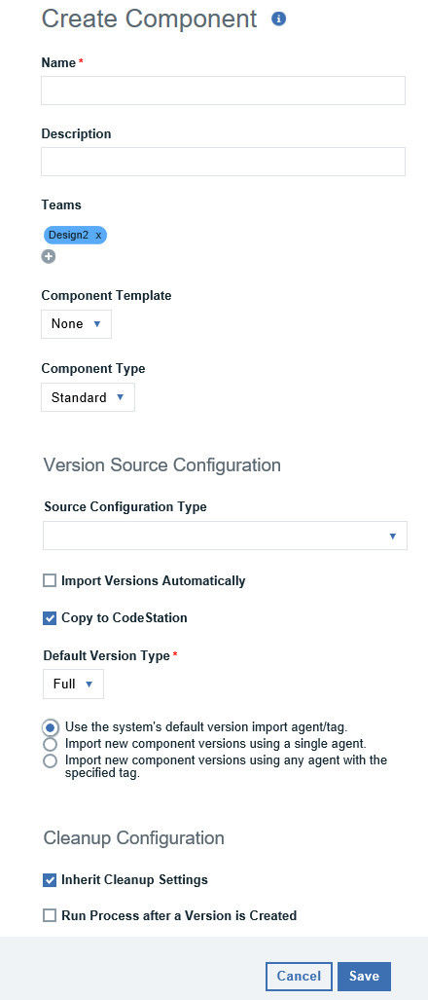

Creating components
A component consists of artifacts of a single source type and one or more processes. Component creation is the same for all source types, however; the content can be different.
About this task
Components can be created manually, by using a template, or imported. This topic includes the steps for creating a component manually. See Component templates and Importing components for the other methods.
Several fields in the Create Component window are the same for every source type, while others depend on the source that is selected from the Source Configuration Type list. The graphic below show the Create Component window with the common fields for all configuration types.
Some of the configuration options might be resticted based on the role assigned to you. Check with your administator, if you need a specific option enabled.

Procedure
- On the Components page, click Create Component.
-
To use a template for the new component, select a template from the Component
Template list.
When using a template, the component inherits source configuration, properties, and processes from the template. A component can have a single template associated with it. The default value is none.
If you select a template, the Template Version field is displayed which is used to select a template version. By controlling the version, you can roll out template changes as needed. The default value is
Latest Version, which means that the component uses the newest version which is based on creation date.Note: If you select a template that includes a source type, the dialog box changes to reflect values that are defined for the template. Several fields, including the Source Configuration Type field are populated and locked.For information about templates, see Component templates.
-
Type a name and description for the component.
The name identifies the component throughout the product user interface. The description conveys more information about the component. If the component is used by more than one application, for example, entering Used in applications A and B can help identify how the component is used. The Name field is required and must contain a value.
-
Specify one or more teams that can manage the component.
Click Add Teams and select from the list of previously defined teams. For information about teams, see Managing Security.
-
Select the component type in the Component Type field.
Select z/OS if the component is based on IBM® z/OS® artifacts, otherwise use the default value of
Standard. If you select z/OS, the source configuration controls are not available. Artifacts that are stored in z/OS do not use source configurations. To learn more about configuring and deploying z/OS components, see Deploying components to the z/OS platform. -
In the Source Configuration Type list, select type of source for which
the component is being defined. This field defines the source type for the component's
artifacts.
Sources are defined with source configuration plug-ins. If you do not see a desired source type, verify that the source-type plug-in is installed.
All artifacts must have the same source type. Selecting a source type shows the fields that are associated with the plug-in. Source-dependent fields are used to identify and configure the component's artifacts.
-
Complete common properties that configure how and when artifact versions are imported.
- Import Versions Automatically
- If selected, the source location is periodically polled for new versions. Found versions are automatically imported. The default polling period is 300 seconds, which can be changed with the Automatic Version Import Check Period setting on the System Settings pane. If left cleared, you can manually create versions by using the Versions pane. By default, the box is cleared.
- Copy to CodeStation
- If selected, imported artifacts are copied to a CodeStation repository which is a tamper-proof embedded artifact repository. If cleared, only metadata about the artifacts is imported. For additional information, see System settings.
- Default Version Type
- Defines how component versions are imported into CodeStation. The
Fullvalue means that the version is comprehensive and contains all artifacts. TheIncrementalvalue means that the version contains only the artifacts that were modified from the previous version. The default value isFull.
-
Select the type of versions to create by default on version imports.
You can import full version or increment type during version import and specify the additional import configuration:
- Use the system's default version import agent/tag
- If selected, the agent or tag that you specified on the System Settings page is used to import component artifacts. The agent or tagged agents must have access to the system where the artifacts are located. See System settings
- Import new component versions using a single agent
- If selected, use the Agent for Version Imports field to designate the agent that imports artifacts into the component. The agent must have access to the system where the artifacts are located. To import artifacts from the server location, install an agent in the same location and specify that agent.
- Import new component versions using any agent with the specified tag
- If selected, use the Agent Tag for Version Imports field to designate the tag that is used to identify the agents that can import artifacts into the component. Tagged agents must have access to the system where the artifacts are located.
-
Configure common cleanup properties.
- Inherit Cleanup Settings
- Specify whether to use the values specified in the system settings for artifact cleanup or
specified them for this component. If this check box is cleared, you must specify values for the
following settings:
- Days to Retain Versions
- The number of days to retain component versions after they are created. For example, if you specify 30, component versions are archived when they are older than 30 days and have no other setting that keeps them. To retain component versions indefinitely, enter - 1. To use the system default retention value, enter 0.
- Number of Versions to Retain
- The number of versions to retain for each component. For example, if you specify 10, the server keeps the 10 most recently created component versions. To retain all component versions, enter -1. To use the system default retention value, enter 0.
-
Complete properties based on the source configuration type selected.
Each source configuration has a unique set of required and optional properties that are displayed after the configuration type is selected. For details on these properties, refer to the plug-in used to integrate the source type.
-
Click Save.
Saved components are listed in the Components pane.